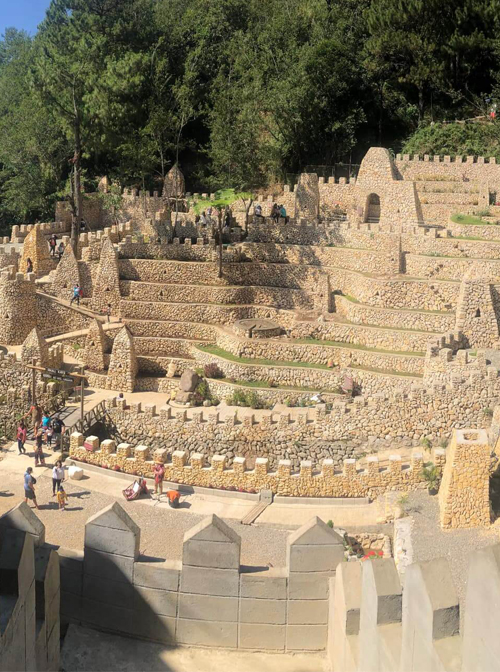

Benguet
View on Google Maps
Baguio City
17 Jun, 2023 - 19 Jun, 2021
Baguio City, located in the Philippines, is a charming hilltop retreat renowned for its pleasant climate, picturesque landscapes, and cultural attractions, making it a favored destination for both locals and tourists. It's often referred to as the Summer Capital of the Philippines.